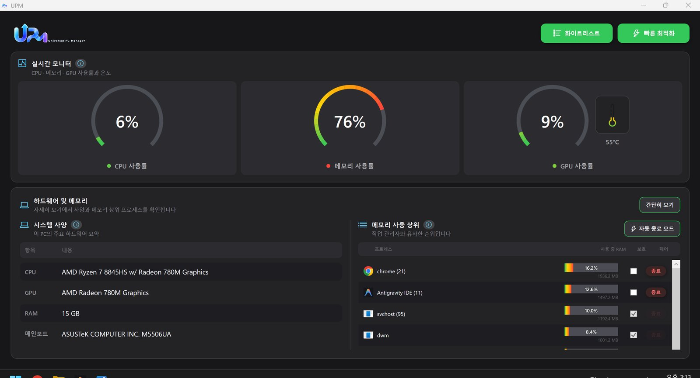
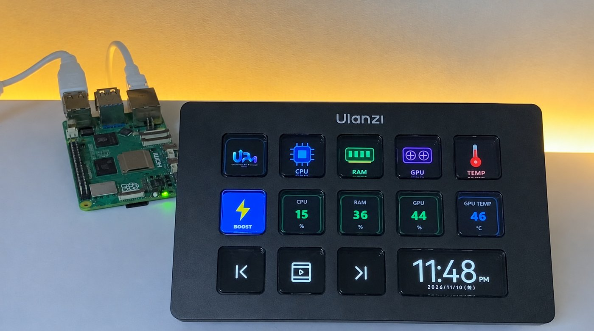

2026 · 동양미래대학교 컴퓨터소프트웨어공학과 졸업작품
UPMUniversal PC Manager
팀 DeCode · 신동수(PC 프로그램) · 한준탁, 윤재호(서버) · 임성은(모바일)
GitHub · upm-server팀 저장소 · DMU-DeCode
어떤 프로젝트인가요
Windows PC의 CPU, 메모리, GPU 사용량을 실시간으로 보여 주고, 꺼도 되는 프로그램만 골라 정리해 주는 PC 관리 시스템입니다.
PC 프로그램이 사용량과 실행 중인 프로세스 목록을 서버로 보내면, 서버가 이를 저장하고 어떤 프로그램을 종료할지 판단해서 돌려줍니다. 모바일 앱, 관리자 웹, 스트림덱형 컨트롤러도 같은 서버에 붙어서 PC 상태를 확인하고 정리나 종료를 요청할 수 있습니다.
사용량 · 프로세스 수집
저장 · 종료 대상 판정
종료 이력
원격 정리 · 종료 요청

맡은 파트서버 (2인 중 1인)
- PC 프로그램이 5초마다 보내는 CPU, RAM, GPU 사용량과 프로세스 목록을 받아 MySQL에 저장하는 API를 만들었습니다.
- 어떤 프로세스를 종료할지 정하는 판정 로직을 만들었습니다. 아래 순서대로 판단하고, 먼저 걸리는 규칙을 따릅니다.
| 순서 | 조건 | 결과 |
|---|---|---|
| 1 | 시스템 프로세스, 개발 도구, 사용자가 직접 지정한 프로그램 | 종료 안 함 |
| 2 | 메모리를 1GB 이상 사용 | 종료 |
| 3 | 창이 없고, CPU 1% 미만이고, 메모리 200MB 이상 | 종료 |
| 4 | 위에 해당하지 않음 | 그대로 둠 |
- 여러 PC에서 자주 잡히는 고메모리 프로세스를 모아 블랙리스트를 자동으로 만들고, 실제로 종료된 프로세스는 따로 기록했습니다.
- 관리자 웹 대시보드(PC 목록, PC별 사용률 추이, 종료 이력)와 로그인 기능을 만들었습니다.
- 한 파일에 780줄 정도 몰려 있던 서버 코드를 기능별 파일로 나눴습니다.
- 라즈베리파이에서 Docker Compose로 서버와 DB를 계속 켜 두고, ngrok으로 밖에서도 접속할 수 있게 했습니다.

어려웠던 점문제와 해결
1. 서버가 자기 자신을 종료했습니다
서버가 python으로 돌아가는데, 메모리를 많이 쓰는 python 프로세스가 종료 목록에 올라가면서 서버가 스스로 꺼지는 문제가 있었습니다. 판정이 끝난 뒤 마지막 단계에서 python, pythonw, uvicorn은 어떤 경우에도 종료 목록에서 빼도록 바꿨습니다.
2. 게임처럼 창이 떠 있는 프로그램은 정리되지 않았습니다
처음에는 창이 없고 CPU를 거의 쓰지 않는 프로그램만 종료 대상으로 봤습니다. 그런데 게임처럼 창을 띄운 채 메모리를 많이 차지하는 프로그램은 이 기준에 걸리지 않았습니다. 그래서 메모리를 1GB 이상 쓰면 창이 있어도 종료 목록에 넣는 규칙을 따로 추가했습니다.
3. 코드를 나누면서 다른 파트를 깨뜨리면 안 됐습니다
서버 코드를 기능별로 나눌 때 PC 프로그램과 모바일 앱은 이미 이 API를 쓰고 있었습니다. 주소나 응답 형식이 하나라도 바뀌면 다른 팀원 코드가 동작하지 않기 때문에, API 주소와 응답은 그대로 두고 파일 위치만 옮겼습니다. 그래서 다른 파트는 코드를 고치지 않고 그대로 쓸 수 있었습니다.
4. 팀원마다 네트워크 환경이 달랐습니다
팀원들이 각자 다른 곳에서 서버에 접속해야 해서 ngrok으로 외부 주소를 열었는데, ngrok을 다시 켤 때마다 주소가 바뀌어 매번 새 주소를 공유해야 했습니다. 이후 라즈베리파이에서 서버를 계속 켜 두는 방식으로 바꿨고, 관리자 웹은 요청 주소를 상대 경로로 써서 서버 주소가 바뀌어도 고칠 필요가 없게 했습니다.
느낀 점이 프로젝트에서 배운 것
이 프로젝트에서 가장 많이 고민한 건 무엇을 끌지보다 무엇을 절대 끄면 안 되는지였습니다. 잘못 끄면 사용자가 하던 작업이 날아가기 때문에, 보호 규칙을 먼저 정하고 종료 규칙은 그다음에 정했습니다.
또 서버는 PC 프로그램, 모바일 앱, 컨트롤러가 함께 쓰는 곳이라서 제 코드 한 줄이 다른 팀원의 작업에 영향을 준다는 걸 알게 됐습니다. 그 뒤로는 기능을 고칠 때 다른 파트에 어떤 영향이 있는지부터 확인하게 됐습니다.